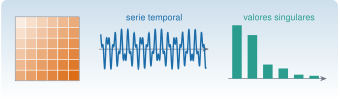

Matemáticas, estadística y programación
M2 · Sesión S2

Objetivos y prerrequisitos
Objetivos. Al terminar la unidad sabrás usar el álgebra matricial, la teoría de señales y los procesos estocásticos como herramientas para estudiar vibraciones y estructuras: desde una matriz de Toeplitz o de Hankel hasta la identificación experimental de las propiedades dinámicas de una estructura.
Prerrequisitos. J1 · Julia esencial, J2.5 · Distribuciones y Monte Carlo, J3.3 · Álgebra lineal numérica, C4 · Primeros pasos con Claude Code
Qué hay. Cada tema tiene su propia página, con teoría, práctica en Julia (con pestaña Python), ejercicios y criterios para darla por superada; el estado de cada página (borrador, revisado o publicado) figura en su cabecera. El tema M2.11 todavía no tiene página. Todas se apoyan en un mismo modelo, el caso transversal del edificio de tres plantas, cuyos datos son sintéticos y de verdad conocida.
Teoría breve
La teoría de esta sesión no se escribe aquí: vive en las páginas de cada tema, para no duplicarla. Esta portada es su índice y su guía de lectura.
Índice de temas
| Id | Sección | Qué se estudia | Duración estimada |
|---|---|---|---|
| M2.1 | Álgebra matricial: normas, condicionamiento y matrices estructuradas | Normas, número de condición y mínimos cuadrados; matrices simétricas, definidas positivas, dispersas y de banda; y las matrices de Toeplitz, Hankel y circulantes con sus usos en predicción, SSA, ERA y convolución. | 4 h lectura 1 h 45 min · práctica 2 h 15 min |
| M2.2 | Problema de valores propios estándar y generalizado | Modos y frecuencias de una estructura como problema de valores propios: ortogonalidad, normalización a masa unidad, cociente de Rayleigh y sensibilidad de frecuencias y modos a un cambio de rigidez. | 3 h lectura 1 h 20 min · práctica 1 h 40 min |
| M2.3 | Descomposición en valores singulares: interpretación, rango numérico y mínimos cuadrados | La SVD y su geometría, la mejor aproximación de rango \(r\), la pseudoinversa, la elección del rango numérico y su aplicación a registros de varios sensores (POD). | 3 h lectura 1 h 20 min · práctica 1 h 40 min |
| M2.4 | Transformada de Laplace y función de transferencia | Función de transferencia de un sistema de varios grados de libertad; polos (frecuencias, amortiguamientos y estabilidad), ceros y antirresonancias; respuesta en frecuencia. | 3 h lectura 1 h 20 min · práctica 1 h 40 min |
| M2.5 | Series y transformada de Fourier, en continuo y en discreto | Series, transformada y DFT; resolución y frecuencia de Nyquist; fuga espectral y elección de ventana; escalado correcto de espectros de amplitud y de densidad espectral de potencia. | 4 h lectura 1 h 45 min · práctica 2 h 15 min |
| M2.6 | Representación en espacio de estados, continua y discreta | Paso de la ecuación de segundo orden a la de primer orden, observabilidad y controlabilidad, discretización exacta con retenedor de orden cero y simulación de la respuesta. | 3 h lectura 1 h 20 min · práctica 1 h 40 min |
| M2.7 | Transformada Z y sistemas discretos | Correspondencia entre los planos \(s\) y \(z\), aliasing, y polos de un modelo autorregresivo (AR) para estimar frecuencias y amortiguamientos, con sus polos espurios. | 3 h lectura 1 h 20 min · práctica 1 h 40 min |
| M2.8 | Transformada de Hilbert y señal analítica: envolvente y fase instantánea | Señal analítica con la FFT, envolvente y frecuencia instantáneas, estimación del amortiguamiento de un modo a partir de su respuesta libre y fallos típicos (varias componentes, bordes y ruido). | 3 h lectura 1 h 20 min · práctica 1 h 40 min |
| M2.9 | Variables aleatorias y procesos estocásticos: estacionariedad y ergodicidad | Media, varianza y covarianza; procesos estocásticos, estacionariedad y ergodicidad; ruido blanco y AR(1); respuesta de un sistema lineal a ruido blanco. | 3 h lectura 1 h 20 min · práctica 1 h 40 min |
| M2.10 | Covarianza, autocorrelación y correlación cruzada | Estimación de autocorrelaciones y correlaciones cruzadas, retardos y significación de un pico, teorema de Wiener–Khinchin y ERA aplicado a correlaciones para identificar los modos del edificio. | 3 h lectura 1 h 20 min · práctica 1 h 40 min |
| M2.11 | Programación aplicada: primer contacto con Julia y Claude Code | Sin página propia todavía. | Pendiente |
| M2.E | Caso transversal: un edificio de tres plantas | El modelo de cortante de tres plantas, sus tres escenarios (referencia, variabilidad ambiental y daño localizado) y una primera lectura de los datos, con la dispersión del estimador. | 60 min lectura 15 min · práctica 45 min |
Total de la sesión: 33 h (lectura 14 h 25 min · práctica 18 h 35 min).
Son estimaciones pedagógicas orientativas: salen del «tiempo orientativo» que indica cada página, repartido entre lectura y práctica, y no son datos oficiales de la asignatura. La sesión presencial no puede cubrirlo todo; el recorrido mínimo propone qué priorizar.
- M2.1.1 Fundamentos de álgebra matricial: espacios, normas, condicionamiento y mínimos cuadrados
- M2.1.2 Matrices fundamentales: simétricas, ortogonales, proyectores y definidas positivas
- M2.1.3 Matrices dispersas, de banda y por bloques
- M2.1.4 Matrices de Toeplitz: autocorrelación, Yule–Walker y predicción lineal
- M2.1.5 Matrices de Hankel: trayectoria, SSA y realización (ERA, SSI)
- M2.1.6 Matrices circulantes: convolución circular y diagonalización con la DFT
- M2.1.7 Otras matrices con aplicación dinámica: Vandermonde, Gram, observabilidad y transición de estados
Cómo recorrer esta sesión
Tres capas. Cada página de tema se organiza igual: la intuición (figuras y simulaciones interactivas), el fundamento (definiciones, teoremas y demostraciones plegables) y la aplicación (el edificio de tres plantas u otros registros). Si vas justo de tiempo, la intuición y la aplicación dan una idea del tema; el fundamento es lo que permite justificar los resultados.
Orden recomendado. El orden de los identificadores no es el de las dependencias: M2.5 (Fourier) pide antes M2.7 (muestreo y aliasing), que a su vez pide M2.6. Según los prerrequisitos de cada página:
- M2.1, base de las demás (simetría, definida positiva, Toeplitz, Hankel y circulantes se citan después).
- M2.2, que necesita M2.1. Antes o durante esta página conviene leer el caso transversal, que es corto y se usa desde aquí.
- M2.3, que necesita M2.1 y M2.2; no bloquea a las siguientes, así que puede dejarse para más tarde.
- M2.4, que necesita M2.2.
- M2.6, que necesita M2.2 y M2.4.
- M2.7, que necesita M2.4, M2.6 y M2.1.4.
- M2.5, que necesita M2.4, M2.7 y M2.1.6.
- M2.8, que necesita M2.5 y M2.4.
- M2.9, que necesita M2.5 y M2.1.4 (y J2.5).
- M2.10, que necesita M2.9, M2.5 y M2.1.4–M2.1.5.
Recorrido mínimo para una sesión presencial. Es una propuesta de la autoría de esta página, no un dato de la asignatura. El criterio es quedarse con lo que el resto de la sesión da por sabido y con lo que encadena menos prerrequisitos:
- el caso transversal (lectura) y, de M2.1, los apartados M2.1.2 (simetría y definida positiva) y la parte del MAC de M2.1.7, porque M2.2 los usa según su propio apartado de prerrequisitos;
- M2.2 completa: los modos son el objeto que se identifica en todo el módulo;
- de M2.4, los polos y su relación con los valores propios (M2.4.1 a M2.4.3);
- de M2.5, la DFT, la resolución y la fuga espectral (M2.5.3 y M2.5.4), con el aliasing de M2.7.2.
El resto (SVD, espacio de estados, Hilbert, procesos estocásticos y correlación, y las matrices de Toeplitz y Hankel) queda para el trabajo autónomo. Si hay un poco más de tiempo, M2.1.4 y M2.1.5 son el paso siguiente natural, porque son las matrices de las que parten ERA y SSI.
Sesión anterior: M1 · Caso real I. Sesión siguiente: M3 · Procesamiento de señales I.
Práctica guiada
Cada página trae su propia práctica guiada, con código en Julia y pestaña Python. En el orden recomendado, y sin repetir aquí los pasos:
- Caso transversal: valor eficaz, PSD, picos y dispersión por bloques de los tres escenarios.
- M2.1: autocorrelación, Toeplitz, Yule–Walker y matriz de trayectoria de un registro real.
- M2.2: modos del edificio, ortogonalidad, efecto de reducir la rigidez de un entrepiso y MAC.
- M2.3: SVD de los tres sensores del escenario A y comparación con los modos.
- M2.4: polos, receptancias y antirresonancias.
- M2.6: espacio de estados, discretización exacta y comparación con Euler.
- M2.7: muestreo reducido y polos de un AR(8).
- M2.5: ventanas, resolución y relación de Parseval.
- M2.8: amortiguamiento del primer modo con la señal analítica.
- M2.9: conjuntos de realizaciones de un AR(1) y estacionariedad por bloques.
- M2.10: autocorrelación con FFT, correlación cruzada y ERA.
«Pídeselo a Claude»
«Estoy en la sesión S2 del proyecto Resonancia. Lee solo los ficheros mse/m02-matematicas/*/index.qmd. Para cada página M2.1 a M2.10 y el caso transversal, extrae de su sección «Objetivos y prerrequisitos» los prerrequisitos que sean otras páginas de M2 y construye con ellos una tabla de dependencias. Con esa tabla propón un orden de lectura válido y compáralo con el orden numérico. Después escribe, para cada página, una frase con la pregunta de ingeniería a la que responde y una función del paquete Resonancia que se use en ella, citando en qué apartado lo has visto. No inventes nada: si un dato no está en las páginas, dilo.»
Verifica. (a) Que la tabla de dependencias coincide con los prerrequisitos que cada página enumera (compruébalo abriendo dos o tres páginas al azar) y que el orden propuesto no coloca ninguna página antes de lo que necesita; en concreto, que M2.5 va después de M2.7. (b) Que cada función citada existe de verdad en Resonancia.jl/src/ (búscala con grep) y que aparece en la página que Claude dice. (c) Que cada afirmación indica el apartado de donde sale. (d) Que no trata M2.11 como si tuviera página ni inventa duraciones: las de la tabla de arriba son las únicas que hay.
Ejercicios
Cada página incluye sus propios ejercicios, intercalados en la teoría y reunidos al final en el apartado «Ejercicios»: M2.1, M2.2, M2.3, M2.4, M2.5, M2.6, M2.7, M2.8, M2.9, M2.10 y el caso transversal. Este es uno que integra varias páginas.
Tienes un registro de aceleración de la cubierta del edificio de tres plantas y quieres estimar la frecuencia y el amortiguamiento del primer modo. Nombra tres caminos de esta sesión que lo permitan y, para cada uno, di qué condición exige.
- Propongo un modelo AR ajustado con Yule–Walker y leo la frecuencia y el amortiguamiento en sus polos (M2.7), con cuidado por los polos espurios y por el sesgo del amortiguamiento.
- Propongo aislar el modo y usar la señal analítica de su respuesta libre (M2.8), que exige banda estrecha, un solo modo y descartar bordes y suelo de ruido.
- Propongo estimar correlaciones y aplicar ERA (M2.10), que exige que la excitación sea aproximadamente ruido blanco.
- Señalo que el amortiguamiento sale menos fiable que la frecuencia.
Tres caminos, los de M2.7, M2.8 y M2.10. (1) Un modelo AR cuyos polos, convertidos con \(\ln z/\Delta t\), dan \(f\) y \(\zeta\); exige elegir bien el orden y distinguir los polos espurios. (2) La señal analítica de la respuesta libre de un modo aislado, con \(\zeta\) a partir de la pendiente de \(\ln A(t)\); exige banda estrecha, sin bordes ni suelo de ruido. (3) Las correlaciones de las respuestas y ERA; exige excitación de ruido blanco. En los tres, el amortiguamiento es menos fiable que la frecuencia.